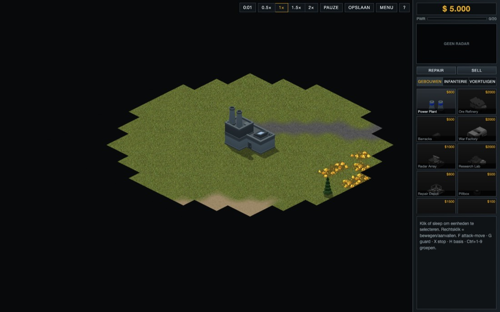

IRON FRONT · UX-VOORSTEL · FASES 14–19 · V1.1.0 → V1.2.0
Command Console
Van een nette webinterface naar een zware commandoconsole die per factie anders aanvoelt, een omroepstem die alles meldt, en een slagveld dat je onder vuur in één blik leest.
- Scope
- HUD & sidebar, announcer & feedback, menu/lobby/score, leesbaarheid slagveld
- Anker
- RA2/YR-gevoel met factie-skin, volledig eigen ontwerp
- Taal
- Engels in het spel, Nederlands in de documentatie
- Stem
- Offline TTS (open licentie) + radiofilter
- Schermen
- Grote monitoren tot tablets met touch
Uitgangspunt v1.1.0
Wat er nu staat

- Geen factie in de chrome. Elke factie krijgt hetzelfde grijze paneel met een goudaccent; het voelt als een dashboard, niet als een legerconsole.
- Cameo's lezen slecht. Het model is klein in een donker vlak, voortgang is een verticale vulling, en "on hold" bestaat visueel niet.
- Het spel zwijgt bijna. De announcer gebruikt de browserstem, die per OS anders klinkt; meldingen staan als tekstregels linksboven.
- Twee talen door elkaar. GEBOUWEN, Repair, GEREED, Our base is under attack, NEDERLAAG.
- Kale randen. Harde zwarte kaartrand, een leeg radarvak, een formulier als lobby en een tabel als eindscherm.
Fase 14–15 1440 × 900
De HUD als factie-console
De sidebar blijft rechts, de radar bovenaan en de cameo's in twee kolommen: precies waar genrespelers ze zoeken. Wat verandert is het materiaal (plaatstaal, klinknagels, glas), de feedback (de credits rollen, de radar heeft luiken, de cameo's hebben een clock-wipe) en de verdeling: bevelen gaan naar een commandobalk onder het slagveld, zodat de sidebar alleen nog over bouwen gaat. Wissel van factie om het materiaal te zien veranderen.
Fase 15 cameo-staten
Een cameo vertelt alles
Elke staat heeft een eigen vorm, niet alleen een kleur. De voortgang loopt als een klok (zoals in het genre) met de resterende tijd erin. De render wordt per categorie ingezoomd, want nu vult een gebouw maar een derde van het vak.
Fase 16 announcer & feedback
Het slagveld spreekt
Elke belangrijke gebeurtenis komt binnen via drie kanalen tegelijk: stem, geluid en beeld. Zo hoeft de speler nooit tekst te lezen om te weten wat er gebeurde. Hieronder de eerste veertig seconden van een potje.
AEGIS · Allied
"Construction complete."Kalm en zakelijk, een vrouwelijke stem. Schone radiofilter, korte squelch.
KOMMAND · Red Bloc
"Unit ready. Move out."Bars en laag. Meer saturatie, een veldradio met ruis.
CHOIR · Psi
"The mind is prepared."Gefluisterd met een korte echo; de squelch is vervangen door een zachte toon.
| Regel | Trigger | Prioriteit | Cooldown | Beeld |
|---|---|---|---|---|
| Our base is under attack | Eigen gebouw krijgt schade, buiten beeld | Hoog | 8 s / gebied | Rode minimap-ping, spatie springt erheen |
| Superweapon detected | Vijand bouwt een superwapengebouw | Hoog | eenmalig | Rode timer linksboven |
| Construction complete | Gebouw klaar om te plaatsen | Midden | geen | READY-plaat, tab-stip |
| Unit ready | Eenheid verlaat de fabriek | Midden | 2 s, gebundeld | Eenheid naar rally-vlag |
| Low power | Verbruik groter dan productie | Midden | 20 s | Rail knippert, gebouwen gedimd |
| Insufficient funds | Productie stokt op $0 | Laag | 15 s | Credits flitsen rood |
| Unit promoted | Veteranie-stap | Laag | 5 s | Chevron-flits boven de eenheid |
Fase 17 leesbaarheid
Lezen onder vuur
Eén vaste beeldtaal voor selectie, gezondheid en bevelen. Kleur draagt nooit de betekenis alleen: vijanden hebben gestreepte balken, en schade lees je ook af aan het aantal pips.
Fase 15 1180 × 820 · touch
Op een tablet
De sidebar wordt een lade aan de rand. De handgreep laat credits en stroom altijd zien; open zitten de cameo's in drie kolommen van minstens 64 px. Een expliciete Select / Order-schakelaar vervangt het verschil tussen links- en rechtsklik.
- TikSelecteren, of een bevel in Order-modus
- Lang drukken + slepenSleepselectie
- Twee vingersPannen; knijpen is zoomen
- Veeg van de randLade open en dicht
Fase 18 menu · lobby · score
De schil eromheen
Het hoofdmenu draait een echt AI-tegen-AI-potje op de achtergrond. De lobby toont spelers als rijen, met een mapvoorbeeld van de echte seed. Het eindscherm telt de scores op met tikgeluid. Het laadscherm wordt een briefing met de map, startposities en tips.
Plan plan/ux-plan.md
Zes fases
Na elke fase draait het spel en zijn tsc, vitest en e2e (drie browsers) groen. Dezelfde werkwijze als bij fases 7–13.
- 14Fundament
Taal, tokens, fonts
Alle UI in het Engels, factietokens in OKLCH, Barlow Condensed, Barlow en Share Tech Mono zelf gehost (OFL). De sidebar rendert maximaal 10× per seconde.
Klaar alsEr staat geen Nederlandse string meer in de UI (e2e) en de drie thema's wisselen via één attribuut. - 15HUD
Sidebar, cameo's, commandobalk, tablet
Factie-chrome, credits-rol, radarluiken, stroomrail, clock-wipe, alle cameo-staten, superwapen-timers, commandobalk, lade en gebaren voor touch.
Klaar alsElke cameo-staat staat in een screenshot per factie en de tablet-e2e (hasTouch) kan bouwen, plaatsen en aanvallen. - 16Stem
Announcer & juice
±30 regels per factie via Piper met radiofilter, een spreekwachtrij met prioriteit en cooldown, ondertitels, unit-acks, minimap-pings, en spatie naar de laatste melding.
Klaar alsElke regel hangt aan een event (unit-test), er klinken geen dubbele regels binnen de cooldown en alles staat in het register. - 17Slagveld
Leesbaarheid
Hoekhaken en pips, orderlijnen, contextcursors, plaatsingsraster, stroomtekort-staat, rally-vlaggen, zachte kaartrand, kleurenblind-veilig.
Klaar alsEr zijn snapshot-tests per staat en de cursor-class wisselt in e2e op vijand, terrein en eigen gebouw. - 18Schil
Menu, lobby, briefing, score
Attract-mode, een lobby met slots en mapvoorbeeld, eigen factie-emblemen, een briefing als laadscherm, en een eindscherm dat optelt.
Klaar alsMenu → lobby → briefing → game → score loopt in alle drie de browsers. - 19Polish
Toegankelijkheid & release
Volumes per bus, UI-schaal, reduced motion, kleurenblind-palet, AA-contrast per thema, visuele regressietests, CHANGELOG 1.2.0.
Klaar alsDe HUD kost gemiddeld minder dan 1 ms per frame, de screenshots per factie × device zijn groen en het register is compleet.